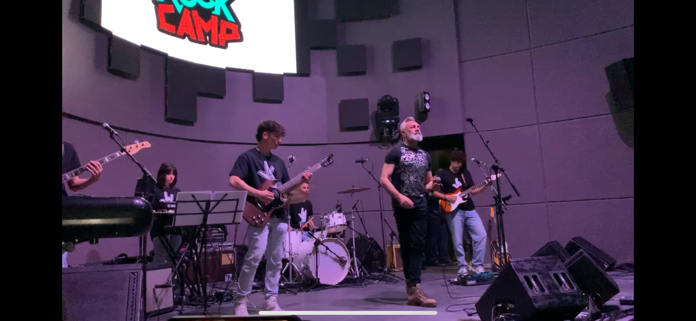

Sobre Mí
¡Hola! Soy Diego Rivera, estudiante de Ingeniería informática en la UFV. La informática es de gran importancia en el contexto actual y futuro ya que está presente en muchos ámbitos del día a día, es por ello que estoy aquí para contribuir al futuro desarrollo de este gran área. Tengo varias aficiones, entre ellas están la música y el deporte. En cuanto a la música, toco la guitarra eléctrica y disfruto tanto tocando en grupo como solo. Y de deporte voy al gimnasio, llevo yendo desde hace casi 3 años y lo sigo disfrutando.
